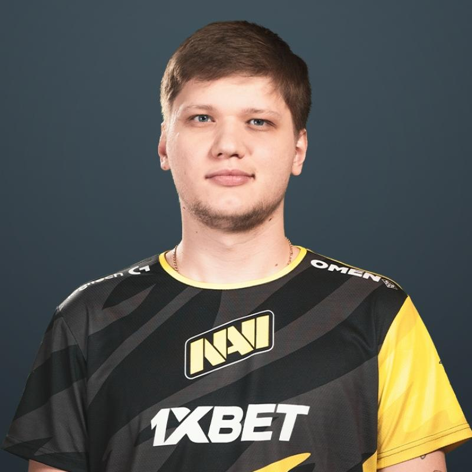

Spis treści
Opis
Oleksandr " s1mple " Kostyliev (urodzony 2 października 1997) to ukraiński profesjonalny gracz Counter-Strike: Global Offensive grający dla Natus Vincere jako AWPer i Fragger .
Informacje
- Imie: Oleksandr Olegovych
- Data urodzenia: 2.10.1997
- Kraj pochodzenia: Ukraina
- Drużyna: Natus Vincere
- Rola: Rifler
Historia
2013-??-?? - 2014-??-?? LAN DODGERS
2014-02-12 – 2014-04-13 Courage Gaming
2014-04-14 – 2014-04-29 Hashtag
2014-04-29 – 2014-??-?? LAN DODGERS
2014-??-?? – 2014-09-09 Amazing Gaming
2014-09-17 – 2015-01-14 HellRaisers
2015-01-15 – 2015-02-01 dAT Team
2015-07-20 – 2015-07-26 Evolution
2015-07-26 – 2015-08-25 Evolution.Dark
2015-08-25 – 2015-09-10 Worst Players
2015-02-01 – 2015-10-23 FlipSid3 Tactics
2016-01-02 – 2016-04-21 Team Liquid
2016-05-08 – 2016-06-06 Worst Players
2016-08-04 – Teraz Natus Vincere
| Mouse Settings | ||||||
|---|---|---|---|---|---|---|
| Mouse | eDPI | DPI | Polling Rate | Sensitivity | Zoom | Raw Input |
| Logitech G Pro |
1236 | 400 | 1000 Hz | 3.09 | 1 | On |